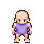

Ontology Docs: Overview
Capitalization
Terminology is capitalized to distinguish it from its colloquial connotations.
Angular Brackets
Angular brackets denote parameters.
Orientation
(0,0) corresponds to the upper-left corner, with down being the positive y-direction.
Width, Length
Width is a horizontal displacement, length is a vertical displacement.
!!! note "Logical Quantification
| is used as a logical quantifier, e.g. y | y + x = 3 would mean the set of y that lie along the line 3 - x.
Model vs Fields
In all following pages, Model generally means a nested data structure, whereas Field refers to a primitive quantity.
Cores
Core: Assets
Assets are the foundation of the Engine. They are, fundamentally, a class for binding image atlases on the fileystem to entities stored on the Board and shown on the Screen.
All Assets have an ID and properties. Most, but not all, Assets have State.
Assets are divided into non-overlapping (Category, Instance) nodes, known as the Asset Hierarchy. Different Categories of Assets expand the base Properties and States in various ways. In brief, the Asset categories are,
Assets are placed in the /src/assets/<category>/ directory and then registered in a Asset Category index /src/assets/<category>/**/*.yaml file. The YAML index schema for each Asset configures its Properties, i.e. the static attributes that are constant and do not change as a result of gameplay.
The /src/assets directory is known as the asset directory.
See Asset Schema for more information on the Asset Property index.
Core: State
- Location:
/src/data/state/
An Asset is deployed onto a Board, where it acquires its State, i.e. the dynamic attributes which change as a result of Mechanics. The Application ingests and stores this information in the State directory.
An Asset Category has a single schema for Properties that each Instance utilizes, but each individual Asset Instance has a unique State, particular to its deployment. For example, a Chest is configured once by its Properties (its width, length, etc.), but each instance of a Chest on the Board is given a unique state (its Position, Content, etc.).
Core: Configuration
- Location:
/src/data/config
Mechanics, Relations and other components of the Engine utilize Configuration stored in the Configuration directory:
Application
The Application consists of an interconnected and interdependent system of Configurations, Services, Libraries and Components. These system serve to interpret and operate on Asset Properties and Asset State.
See Architecture documentation for more information.
Configurations
Configuration: Loader
- Address:
app.static.loader
The Loader is responsible for reading in Configurations, Properties and State files from their respective directories, and then validating them into Models via Pydantic TypeAdaptors.
Configuration: Semantics
- Address:
app.static.semantics
All semantic terms utilized by the Application are enumerated within this package.
Services
Service: Factory
- Address:
app.services.generators.game.factory
The Factory builds Assets and other Components based on Recipes.
Service: Orchestrator
- Address:
app.services.orchestration.orchestrator
The Orchestrator is the dependency injection system. It is responsible for converting validated Models into application Components.
Libraries
Library: Registry
- Address:
libs.graphics.registry
The Registry loads in all of the Asset files while the application bootstraps. Each Asset Frame is indexed and stored in memory.
Components
Component: Board
- Address:
app.game.board
The Board acts as the Game's in-memory "database". It holds all in-game Assets and Configurations during the game loop, providing queryable interfaces to the Engine and Mechanics.
The state files for each Board are maintained in /src/data/state/<board-key>/**.
Interface: Queries
The Board exposes interfaces for querying the game state:
- Hierarchy Queries
board.instances(key, layer): Returns a List of Assets on the given layer, filtered by Instancekey.board.categories(key, layer): Returns a List of Assets on the given layer, filtered by Categorykey.
- Physics Queries
board.bridges(layer): Returns a list of Bridge Assets on a layer.board.weights(layer): Returns a list of Assets with non-negative mass (\(m \ge 0\)) on the given layer (includes static and dynamic bodies; excludes sensors).board.obstacles(layer): Returns a list of Assets that qualify as Obstacles.
- Environment Queries
board.tile(layer, position, instance): Retrieves background or foreground Tiles via \(O(1)\) spatial hash lookup.board.shorelines(layer=None): Retrieves active procedural shoreline assets for a specific layer or across all layers.board.moisture(layer, x, y): Queries scalar soil moisture potential \(\Phi(x, y)\) from the layer's compiledMoistureField.
Interface: Predicates
THe Board exposes predicates for asserting conditions of the Board state.
- Environment Predicates
board.fluid(layer, position, exclude=None): Evaluates whether a coordinate intersects any active Fluid stream or annular pool across the layer, with an optional entity exclusion filter.
Service: Cradle
The Cradle instantiates Assets during the course of the Engine loop through the interface of Mechanics.
Service: Migrator
The Migrator asynchronously loads the Board State.
Component: Engine
- Package:
app.game.engine
The Engine handles the core loop and Frame rate calculations.
Field: Bus
The Bus processes asynchronous Events.
Service: Provider
The Provider instantiates Menus.
Service: Binder
The Binder for binding Widget States to Asset States.
Service: Library
The Provider contains a Library for injecting Widget states with plot-dependent content.
Component: Screen
- Package:
app.game.screen
The Screen acts as a high-level container for a Cythonized SDL rendering interface.
Concepts
Concept: Hitboxes
Many Assets have Hitboxes. Hitboxes definitions are static and read before the execution of the Engine Hitboxes have positions and dimensions.
To ensures Hitboxes remain statically configured, Hitbox positions are always given relative to the Asset, i.e. treating the upper-left corner of the Asset frame as the origin. Hitbox dimensions are always absolute. The following snippet shows the hitbox schema for an LPC Sprite Frame, with the image below showing how the hitbox translates into the physical image with a blue rectangle,
position:
x: 21
y: 23
dimensions:
w: 22
l: 21

LPC Sprite Hitbox in (Walk, Down, 0) State
While hitboxes are statically confitured, this does not necessarily mean hitboxes are statically accessed. See Asset Component Architecture for more information.
Concept: Layers
All deployed Assets have a Layer. Layers represent a "view" where the Asset is located. When the Screen renders an entire frame, it is rendering a Layer.
Layers on a board can be traversed through Doors. The coordinate plane of each Layer is independent of every other. For example, a Sprite may enter a Door on Layer 1 at (x_1, y_1) and get released on Layer 3 at (x_2, y_2). For this reason, each Layer may have different dimensions.
Sprite interactions are constrained by their Layers. Because Layers are superimposed coordinates, all interaction calculations are separated by Layer, to avoid inter-Layer collisions and interactions.
Concept: Sprites
Sprites are Intentional Assets. More formally, Sprite Intentions are driven through a coupled system of finite automata, logic and spatial algorithms. The data structure that drives this process is called the Intention Transition Matrix. The processing and handling this mechanism occupies a large part of the application's internal logic.